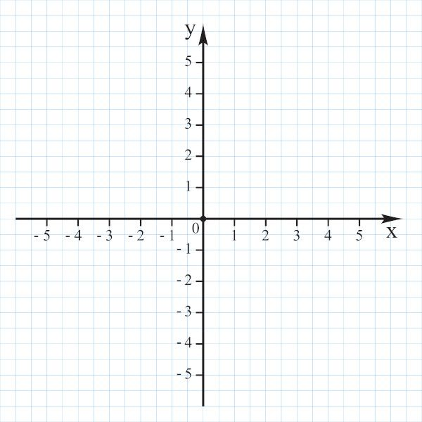

Este sistema permite a criação de figuras geométricas planas por meio da inserção de pontos no plano cartesiano. O usuário deve selecionar o tipo de figura e informar as coordenadas (X, Y) de seus vértices. Para formar um triângulo corretamente, é necessário informar três pontos distintos que não estejam alinhados. Isso significa que os pontos não podem estar na mesma reta, pois, nesse caso, não formam uma área e não é possível criar um triângulo. Uma boa dica é evitar pontos que “crescem em linha”, como (1,1), (2,2) e (3,3). Além disso, para fechar a figura corretamente no sistema, é necessário repetir o primeiro ponto ao final da sequência. Dessa forma, o triângulo será considerado válido e poderá ser criado com sucesso.

| Cadastro da Figura | |
| ID: | |
| Tipo: | |
| Coordenadas dos Vértices (X, Y) | |
| X: | |
| Y: | |